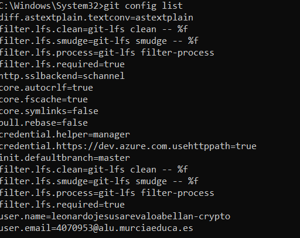
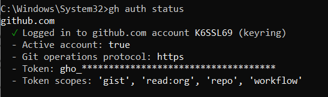
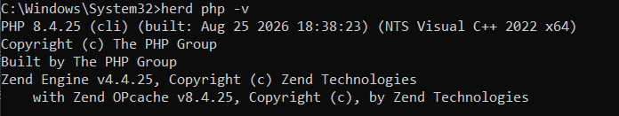
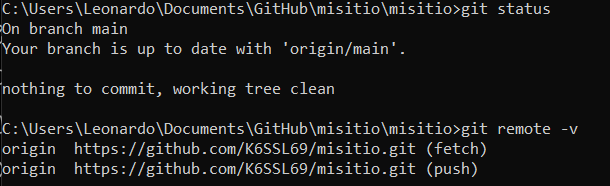
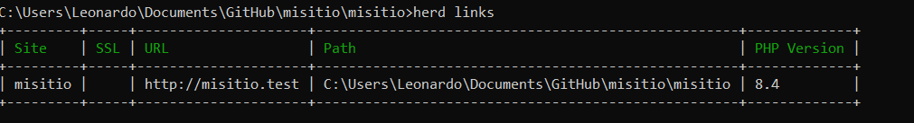

Práctica 01
1. Git instalado y configurado en local
He instalado y configurado Git en local, y para comprobarlo uso el siguiente comando:
git config list
2. GitHub CLI instalado y configurado
He instalado y configurado GitHub CLI para trabajar con GitHub desde la terminal, y para comprobar que está correctamente autenticado uso el siguiente comando:
gh auth status
3. Herd instalado con PHP 8.4
He instalado Herd y configurado PHP 8.4 para utilizarlo como entorno de desarrollo local. Para comprobar la versión de PHP uso el siguiente comando:
herd php -v
4. Repositorio "misitio" clonado en local
He clonado el repositorio misitio en local para poder trabajar con el
proyecto desde el equipo. Para comprobar la conexión con el repositorio
remoto uso el siguiente comando:
git remote -v
5. Herd enlazado al repositorio "misitio" y HTTPS
He enlazado el repositorio misitio con Herd para poder ejecutarlo
desde el entorno local y acceder al sitio mediante HTTPS. Para comprobar
los proyectos enlazados con Herd uso el siguiente comando:
herd links
6. Elementos y plugins utilizados en Read the Docs
Para realizar la documentación se ha utilizado Markdown junto con Read the Docs.
Los principales elementos utilizados son:
- Títulos y subtítulos para organizar el contenido.
- Bloques de código para mostrar los comandos utilizados.
- Imágenes para añadir las capturas de pantalla.
- Texto para explicar cada apartado.